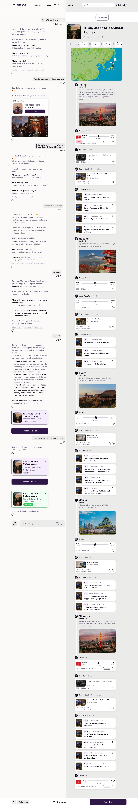

AladdinGenie
An AI trip planner that checks your visa before it plans your trip. A conversational planner that builds a bookable, fully editable itinerary, designed for iOS and web.
- Role
- Product designer, end to end: flows, conversation design, UI, design system, handoff
- Client
- Hire My Idea confirm wording
- Timeline
- from Figma version history
- Team
- e.g. founder, 2 developers, me
- Surfaces
- iOS app and responsive web, same flow on both
- Status
- Version 1 designed to handoff, dev-ready. The company wound down before launch.
01The problem
AI trip planners are good at generating a dreamy itinerary and quiet about whether you're allowed to take it. For an Indian passport holder, or anyone outside the visa-free club, the first question isn't "Tokyo or Kyoto?" but "can I get in, and how long will that take?" Most planners never ask. The user finds out after they've fallen in love with the plan, sometimes after they've booked.
Aladdin's brief was an AI-first travel app where Genie, the planner, takes you from a one-line request to a booked trip: destinations, stays, transport between cities, day-by-day experiences, flights and payment. My job was the Genie flow across iOS and web, plus the surrounding app.
The design question I kept coming back to: how does a conversational planner stay fast and delightful while being honest about the boring, blocking stuff first?
02What I designed
Genie is the spine of the app. This case study focuses on it. The rest of Aladdin, Home, Explore, Trips, Stays, Flights, Profile and Community, was designed alongside but gets a sentence here, not a section.
Conversation
- Opening prompt and clarifying questions with tap-to-answer chips
- Visa check and visa-guidance card before any itinerary
- Thinking states, edit and regenerate on any message
- Chat and Trip as two views of the same plan
Trip builder
- Destination selection with Relaxed, Balanced and Fast route pacing
- Stay details per leg, modify routes with transport per hop
- Day-by-day itinerary with swap, remove and add experience
- Route map, download and share
Booking and web
- Flights, stays, payment method, booking confirmed, ticket
- Same flow on web as a three-pane layout: chat, plan, map
- Design system shared across iOS and web
03Decision one: visa before itinerary
The obvious flow is to generate the trip and mention the visa somewhere at the end. It demos beautifully and sets people up to be disappointed. I flipped it. When a destination needs a visa the user doesn't hold, Genie says so before it builds anything, in one sentence, with two chips: "Yes, it's valid" or "No, I don't have one".
If the answer is no, Genie doesn't stop. It still plans the full trip, and it drops a visa card into the conversation: processing time, maximum stay, passport validity rule, approximate fee, and a Start Application button that opens the official application centre. Most importantly, it does the date maths: "On track for Jan 5. Apply by Dec 12." Then it offers to slot that deadline into the trip timeline.
Uploading a passport and visas works in the other direction too. Genie unlocks visa-free and visa-on-arrival destinations for that passport, so "where can I go next month?" gets an answer that's actually true for you.
Rejected: a visa badge on the destination card with a link to a help page. Accurate, but it treats the hardest step of the trip as a footnote and leaves the user to work out the timing alone. add anything the founder said about this trade-off
04Decision two: chat asks, cards do the heavy lifting
A chat interface is great for intent and terrible for comparison. Nobody wants to pick six cities out of a paragraph. So Genie's conversation stays short and asks only what it needs: where you're starting from, who's coming, what your vibe is, with chips so the answer is one tap. Then it hands off to a card. "Top destinations for your trip. Open."
Opening the card drops the user into a purpose-built screen: a stack of destination cards with photos, dates and price range, a Relaxed, Balanced or Fast pace toggle that changes the recommended route and stop count, and a Generate Trip button that returns them to the conversation with the choice made. The chat remembers the choice as a message, so the thread stays a readable record of the plan.
The same pattern repeats for stays, routes, experiences and booking. Chat for intent, cards for decisions, and a Chat / Trip toggle at the bottom so the user can flip between the conversation and the structured plan without losing either.
Why this matters for an AI product: it keeps the model's job narrow. Genie suggests and explains. The user chooses in an interface built for choosing. Fewer hallucinated bookings, fewer "wait, what did I agree to" moments.
05Decision three: nothing Genie generates is locked
Trust in an AI planner comes from being able to overrule it cheaply. If changing one hotel means regenerating the whole trip, people stop trusting the trip. So every layer of the plan is editable in place.
- Destinations: select or deselect any stop, or switch the pace and let Genie re-route.
- Routes: a Modify Routes sheet shows each leg with its transport, duration and price. Tap a leg to swap plane for train, or change the order.
- Stays: a Trip Overview sheet lists every leg with origin, mode, destination and date. Each one can be removed or re-dated.
- Experiences: every item in a day has swap and remove, plus Add Experience, with search by food, nightlife or culture.
- Dates: change them in chat ("make it Jan 5 to 20") and Genie regenerates with everything else preserved.
The itinerary itself is shown two ways: a scannable overview, one line per day, and a day view with a note, the experiences, and a map with numbered stops. Download and share sit in the header because a trip that lives only inside an app isn't a trip you can send to the person coming with you.
06The finished trip is one bookable object
Once the user says yes, Genie doesn't hand back a wall of text. It builds the trip as a single structured plan, city by city. Each city block has the arrival (flight or train, with duration and price), the transfer to the hotel, the stay (with rating and nightly rate), the day-by-day itinerary with experiences, and the local transfers between them. Every item keeps its swap and remove controls from the previous section.
At the bottom sits one button: Book this Trip. Flights, stays and transfers are booked together, and the confirmation, ticket and booking detail follow in the same conversation. Download and share live in the header so the plan can leave the app and reach the people travelling with you. On web the same trip renders as the middle pane, with the chat that produced it still on the left and the route map on the right.
Why one object: if the plan is a list of separate bookings, every change means re-checking five things. If it is one trip, a change to the dates ripples through flights, stays and transfers together, and the user only has to confirm once.



07Craft and system
- Genie has a voice. Warm, a little playful ("Japan for 15 days? Now we're talking"), and direct when it matters ("Before I build it, Japan needs a tourist visa"). The tone was written as part of the design, not left for copy later.
- One system, two platforms. The iOS flow and the web flow share components, colour and type. On web the chat stays on the left and the cards expand into panes instead of sheets, so nothing has to be relearned.
- Iteration is visible in the file. A second version of onboarding, colour direction explorations, and an enhanced version of flight booking all sit alongside the shipped-to-handoff versions. say briefly what changed in V2 onboarding and why
- Competitor reference, kept honest. We mapped Layla's flow screen by screen and used it as the baseline to beat, not to copy. The visa layer and the editable-everything plan are where Genie diverges.
08Outcome
Version 1 of Genie reached dev-ready on both iOS and web, with a clickable prototype of the chat-to-booking flow and annotated handoff pages. add what was built, if anything, and any founder or developer feedback as a quote
The company wound down before launch, so there are no usage numbers. If it had shipped, these are the ones I'd have watched first:
- Trips abandoned at the visa step. If this is high, the honesty is costing us. If it's low and bookings rise, it's earning trust.
- Edits per trip before booking. A healthy number means people are customising. Zero means they don't believe they can.
- Chat to first card, and card to generated trip. How quickly intent becomes a plan.
What I'd do next
- Test the visa conversation with five travellers who've been refused or delayed before. Their reaction to "apply by Dec 12" is the whole product.
- Design the group case properly. "Who's coming along?" currently changes recommendations, not permissions. Shared trips with co-editing is the obvious next layer.
- Make the visa card live: pull processing times from the application centres rather than a static estimate.